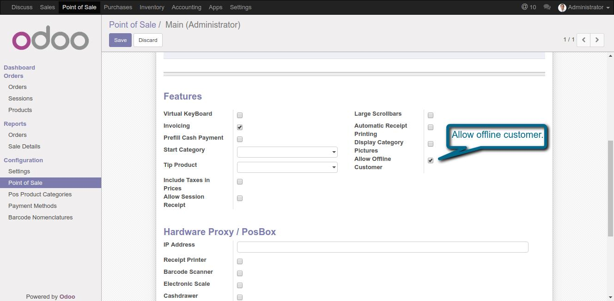
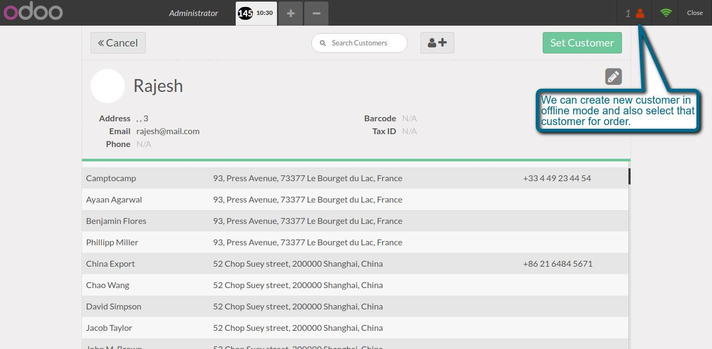

POS Offline Customers
Allows you to create customer in offline mode
Features
- Internet is not required when we create new customers.
- This module makes odoo full offline.
1. Allow to create offline customer.

2. Offline customer notification.

If You Need Any Help Please Contact
Email Id: erpmstra@gmail.com